Published: 2023-01-25
Source link: https://www.cnphotos.net/academy/show-110.html
Wintersweet is a subject you should not miss in winter. Below, 28 example photos show the small tips for shooting it.
1. Choosing the subject matters more than shooting
We have shared many flower articles, and the most important point is choosing the subject. Choosing matters more than the shooting.
Though wintersweet trees are not tall, the flowers are dense. So you need the three flower tools (telephoto, wide angle, macro) plus a focus point (a visual focus, such as a house or a person).
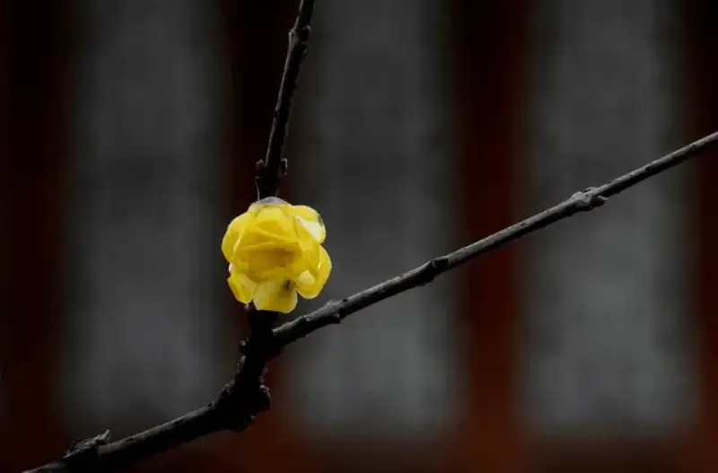
Example 1
Example 1:When the wintersweet is too high, use a telephoto for a close-up of the blossoms. This not only blurs the background but also crops it, leaving the messy parts outside the frame.
The light and shadow in the background also adds much to the frame.
Example 2
Example 2:Shoot with a macro to show the details of the wintersweet. Paired with a dark, black setting, it brings out the texture and color of the subject. This suits flowers fallen on the ground or on low branches.
Example 3
Example 3:When you cannot find a good single flower or angle, use a wide angle from a little farther back to take in a whole branch of blossoms. This shows a scene of rich, thriving flowers.
Use a large block of gold together with dark blocks such as buildings and trees to show the beauty of the wider setting.
Example 4
Example 4:Old tree and new flowers: choose the gnarled, textured trunk of the wintersweet and contrast it with the yellow blossoms, bringing out the color and texture of the flowers.
Besides open flowers, you can shoot buds about to open, the lines of the branch, closed flowers, beaded flowers, and even fading blossoms. Shoot anything with a beautiful shape.
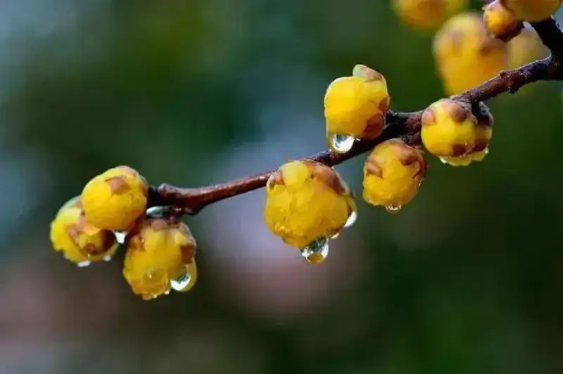
Example 5
Example 5:Buds about to open have a delicate look. The branch runs along a diagonal, the blossoms stand proud on the twig, and the rain adds to the mood.
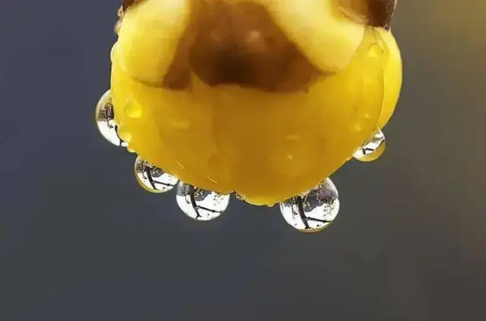
Example 6
Example 6:Shoot after rain with a macro. In each bead of water, the world of the flower is reflected, crystal clear and vivid.
2. Use light flexibly
For colorful subjects like plum blossoms, the use of light is the key to a personal work. Shoot as the sun rises or sets, when the light is soft and makes good light-shadow effects.
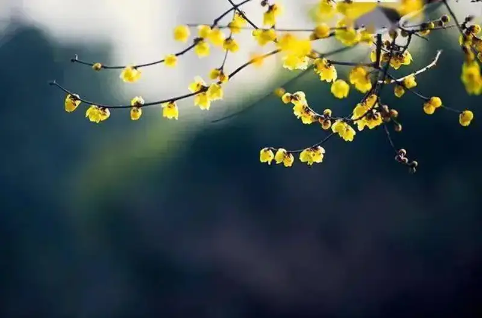
Example 7
Example 7:Shoot in early morning or evening, when the light is soft and the light-shadow effects are good.
Generally, front light is even and soft and makes the sky bluer. Backlight gives a striking rim and can create special effects such as Tyndall beams and sun stars. Top light is clear and sharp. Side light is rich in detail.
There is no fixed rule for light. Every direction of light has its own character, so think carefully and try freely.
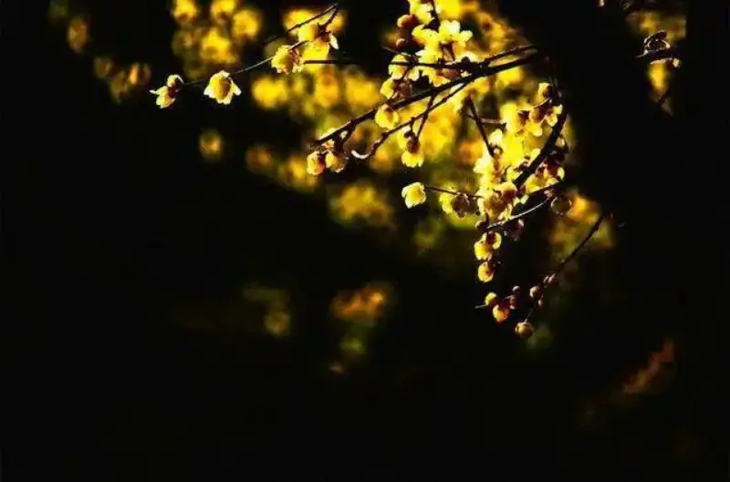
Example 8
Example 8:In backlight and transmitted light, light passing through the blossom brings out its texture, grain, and layers. With clear light-shadow contrast, the crystal feel of the petals shows well.
Meter on the brighter part of the flower and add exposure compensation as the setting requires, to strengthen the translucent effect.
Example 9
Example 9:Front light records the gentle beauty of the wintersweet. Under front light the sky is very blue, which contrasts with the golden blossoms for a stronger visual effect.
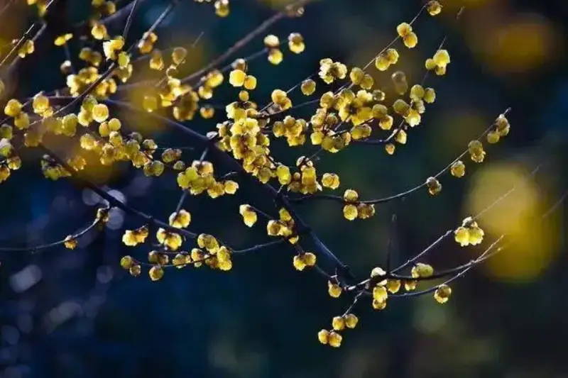
Example 10
Example 10:Side light gives a well-lit, dimensional frame. It also helps show the depth and space of wide scenes such as distant hills and buildings.
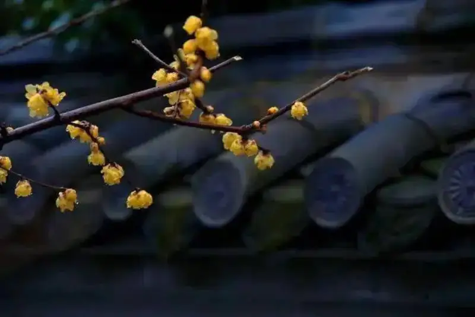
Example 11
Example 11:Soft light makes the tones gentler, and the beads and rain trails add a rainy mood.
In fact, with a little thought and practice, many things at hand can help you improve your light.
For example, a sheet of white paper or a magazine can be a quick reflector. Or a light cloth or tissue over the flash softens its hard light and avoids harsh shadows.
Example 12
Example 12:Cover the flash with a thin napkin to soften its light. The light spreads on the subject, adds dimension, and avoids harsh shadows.
3. Choosing the background
In flower photography, the background should be simple and set off the flower. You can use a blurred background, a dark black background, an overexposed high-key background, or a simple one such as a clear sky or a wall.
Bokeh can easily give a frame a dreamy, fresh, whimsical feel and is a great tool for making a plain scene look artistic.
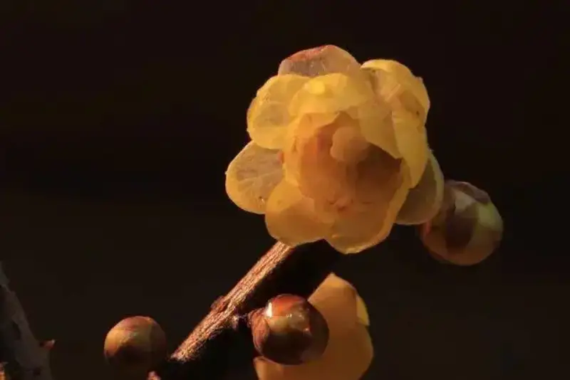
Example 13
Example 13: Choose a darker setting as the background to separate the bright subject from the frame. A dark background also simplifies a busy setting and stresses the color of the wintersweet.
Example 14
Example 14:Background blur avoids a busy setting and brings out the flower. Use other same-color wintersweet as a blurred background to contrast sharp and blurred and set off the subject.
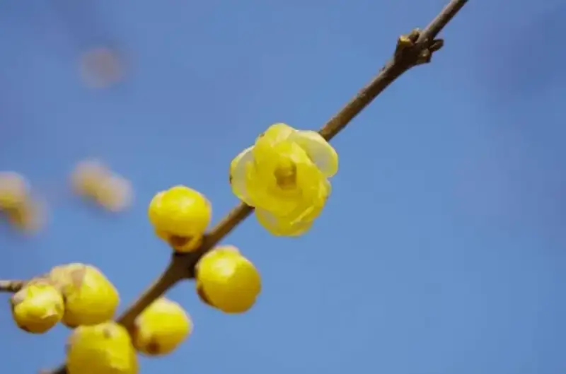
Example 15
Example 15:A common method is to shoot from a low angle against the sky, which simplifies the frame. The golden blossoms and blue sky set each other off, and a few clouds add a touch of charm.
There are many uniquely Chinese elements around us. If you include them when you shoot flowers, you will make Chinese-style photos that are different from others.
Tile-roofed houses, lattice windows, courtyards, and red walls are all uniquely Chinese. Do not ignore them when you shoot. See our earlier article on Chinese elements in composition.
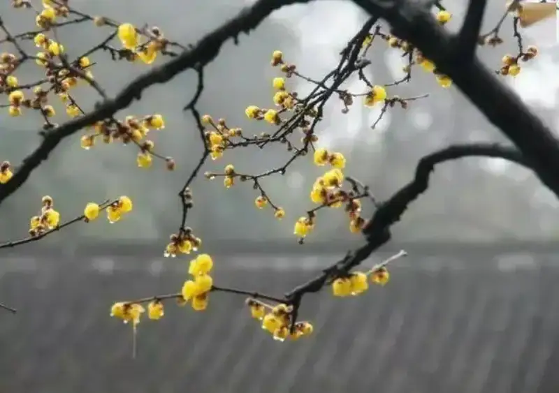
Example 16
Example 16:A common tile-roofed house is the background. The branch in front of the building blends with it into a beautiful Chinese pastoral painting, and the beads add a rainy mood.
Example 17
Example 17:A bright red wall is the background, and the distinctive Chinese building makes a decorative frame. The snowy scene adds charm.
4. Framing and layout
Flower photography is about framing. To shoot plum blossoms well, the key elements are space, shadow, horizontal, diagonal, shadow, color, clarity, and shallow depth.
Try foreground framing, centered framing, negative-space framing, and vertical framing.
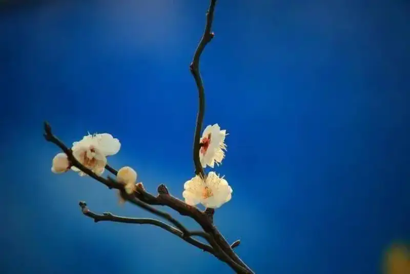
Example 18
Example 18:Negative-space framing gives a free, spare look that makes the frame feel more poetic and light.
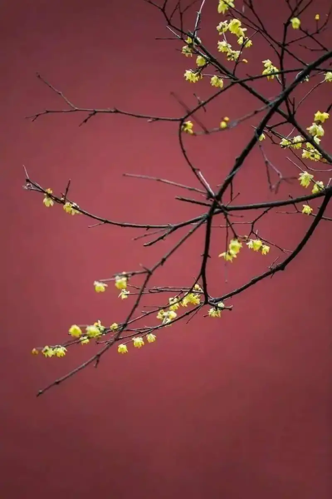
Example 19
Example 19:A vertical framing shows the lines of the branch and adds charm.
Example 20
Example 20:A blurred foreground contrasts sharp with blurred to set off the wintersweet. The blurred branch adds layers and depth.
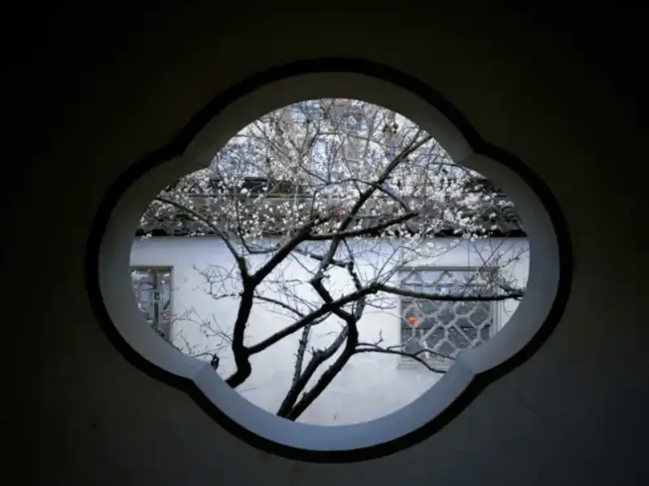
Example 21
Example 21:Frame the blossoms through an old door, window, or arch of an old building, and it looks like a painting.
There are two basic rules. The first is the rule of subtraction: remove any supporting element that does not help the subject, and let no secondary element overpower the main one in position, clarity, color, or brightness.
The second is the rule of addition: when the frame lacks beauty or mood, actively add elements. Also mind the angle. A fresh angle often gives a photo that stands out.
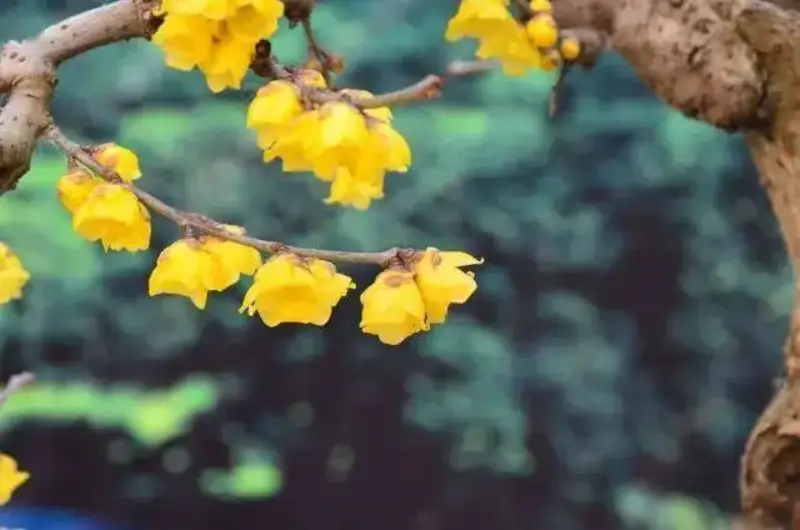
Example 22
Example 22:Green trees as the background bring out the bright color of the wintersweet.
Example 23
Example 23:Flying birds and falling rain add life and motion to the frame and set off the open blossoms.
Example 24
Example 24:White snow, wintersweet, and Hanfu dress together carry a classical feel of a thousand years ago, beautiful as poetry. Against the large snow and yellow flowers, the figure in red stands out.
In framing, there is only accumulated experience, no rigid box.
The color of plum blossoms is simple, but their poses are countless. With winter snow and spring wind around, we need even more flexibility in framing.
Example 25
Example 25:Using snow to set off the fragrance of the wintersweet is a common method and brings out the beauty of the proud blossom.
5. Creative techniques
Tired of the usual way? Then be creative. Try macro, multiple exposure, rear-curtain flash, and Chinese-style post work. Ideas and creativity decide whether your work stands out.
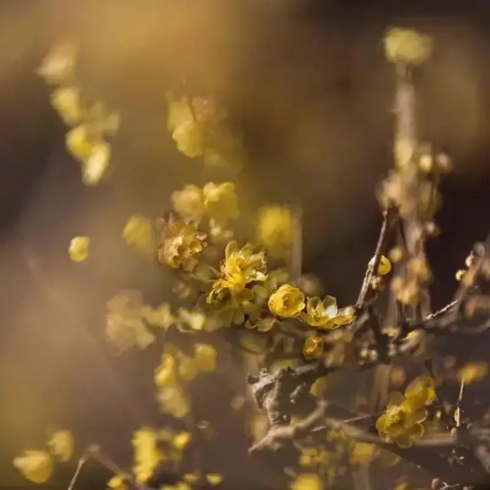
Example 26
Example 26:Multiple exposure adds a dreamy, beautiful feel. See our earlier article on multiple exposure for spring flowers.
Example 27
Example 27:When the scene is busy, use a mirror lens together with multiple exposure to layer sharp and blurred. This harmonizes the frame and adds mood.
Example 28
Example 28:Go black and white in post and add elements such as seals and text to make a Chinese style.
There are many more special techniques. But use them well: a technique that fits the subject is striking and expresses it perfectly. A technique used for its own sake overpowers the subject and loses its value.
Summary
These tips for shooting wintersweet are only a reference. The key is to shoot more and think more.